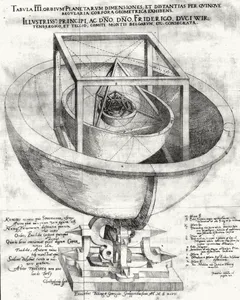
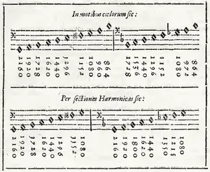
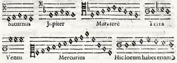
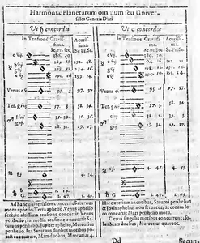
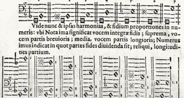
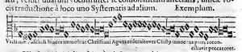
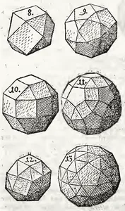

Content of type 'summary'
Dedication & Snow Stars: Summary
Prompted by six-cornered snow crystals falling on his coat on the Prague bridge, Kepler formulated the foundational principle of structural crystallography—macroscopic symmetry reflects discrete geometric packing of microscopic elementary globules.
Letter to Mästlin: Summary
Constructed purely by straightedge and compass from \(O(0,0)\) and \(A(1,0)\) in geometor.kepler.harmonices_geometry.construct_kepler_right_triangle (@proposition("Epistola.1597.KeplerTriangle"), auto_intersect=False) over geometor.model.get_kepler_field() (quartic minimal polynomial \(x^4 - x^2 - 1 = 0\)):
Praeambulum: Summary
Kepler introduces Book IV (Metaphysicus, Psychologicus & Astrologicus), explaining why he inverted the cosmological plan—treating human music in Book III before sublunary Nature in Book IV and the Creation in Book V—and why a metaphysical inquiry into the essence of harmony must precede any account of planetary rays, lest readers expect audible Pythagorean music of the spheres.
Preface: Summary
Against Petrus Ramus and Willebrord Snellius, Kepler defends Euclid’s Tenth Book and Proclus’s commentary on Elements Book I. Kepler argues that geometric figuration and proportion are fundamentally mental and archetypal acts, that Euclid’s classification of irrational magnitudes (medials, binomials, apotomes) exists specifically to distinguish constructible regular polygons (scibilia) from non-constructible ones (inscibilia), and that the five Platonic solids form the architectural telos of the Elements just as they govern planetary intervals in his Mysterium Cosmographicum.

Preface: Summary
Dimensional Shift from Infinite Plane Polygons to Five Convex Solids: While teaching the zodiacal progression of Saturn–Jupiter great conjunctions at Graz on July 19, 1595, Kepler observed that the incircle and circumcircle of an equilateral triangle stand in ratio \(1 : 2\) (\(Q_{\text{in}}/Q_{\text{out}} = 1/4\)). Realizing that regular 2D polygons form an infinite family whereas three-dimensional Euclidean space admits strictly five regular convex polyhedra ([XIII.18]), he deduced an a priori geometric explanation for why Copernicus's heliocentric system possesses exactly six mobile planets separated by five interplanetary intervals.
Prooemium & Definitions I–XIII: Summary
In the Prooemium and Definitions I–XIII of Harmonices Mundi Book II (pp. 47–50), Kepler introduces architectonic congruence—the geometric sociability (ἁρμόττειν) of regular and star polygons:
Prooemium: Summary
Introduces Book III’s sevenfold Axiomata (Ch. I) and outlines all sixteen chapters bridging constructive geometry to musical scales, modes, counterpoint, and even political harmony.

Chapter I: Summary
Chapter I is Kepler’s foundational manifesto of astronomical realism. Before unfolding the polyhedral secret of the cosmos, he establishes why the heliocentric hypotheses of Nicolaus Copernicus (De revolutionibus, 1543) deserve full physical assent rather than dismissal as a mere calculating fiction:
Chapter I: Summary
Articulates Kepler’s Kant-anticipating philosophy of mind: harmony requires a comparing intellect endowed with innate archetypal circles.
Chapter I: Summary
Derives the complete closed set of primary consonances (\(1:2, 2:3, 3:4, 4:5, 5:6, 3:5, 5:8\)) purely from Euclidean straightedge-and-compass polygon constructibility over \(\{2,3,5\}\).

Chapter III, Prop. VIII: Summary
In Harmonices Mundi Book V, Chapter III, Proposition VIII—conceived on March 8, 1618, initially rejected after a calculation slip, and triumphantly recovered on May 15, 1618—Kepler formulates the universal mathematical law (Lex Tertia) linking planetary orbital periods to mean heliocentric distances: the squares of the periodic times are proportional to the cubes of the semi-major axes:
Definition I: Summary
Kepler opens Book I’s deductive sequence by defining convexity (‘outward-facing angles’) and equilateral/equiangular symmetry together, immediately distinguishing primary convex regular polygons from star polygons introduced in Definition II.
Honeycombs & Rhombic Polyhedra: Summary
Extending Pappus's planar honeycomb analysis into three dimensions via the trihedral rhombic keel of opposing bee cells, Kepler discovered both vertex-dual Catalanesque rhombic polyhedra:
Proposition XIV: Summary
Book II passes directly from Definitions I–XIII (covered in Definitiones) to Proposition XIV, ruling out \(2\)-valent planar vertices because every convex \(n\)-gon angle is strictly acute/obtuse \(< \pi\).
Chapter II: Summary
Connects human musical intuition and sublunary meteorology through a shared instinctive geometric resonance faculty.

Chapter II: Summary
In Chapter II, Kepler invokes Nicholas of Cusa to establish the fundamental cosmological polarity between the spherical universe (Curvum, likeness of God) and interior polyhedral boundaries (Rectum, likeness of creatures). Setting aside the innumerable fixed stars, he turns to the six moving planets around the Sun and asks why there are precisely six orbs with their observed proportions.
Chapter II: Summary
Kepler equates the linear monochord string to a bent circle and proves in Propositions IX–XIX that exactly seven harmonic sections exist (divisions by 2, 3, 4, 5, 6, 8, and 10), generating the musical scale by geometric constructibility rather than Pythagorean number mysticism.
Chapter IV: Summary
Establishes Kepler’s inverse-square extremal angular-speed theorem \(\omega_{\text{per}}/\omega_{\text{aph}} = ((1+e)/(1-e))^2\) and defines the harmonic comparison between adjacent planets’ converging and diverging speeds. Because a planet sweeps equal focal sector areas around the Sun (Solf) in equal times—comparing the short, wide perihelion sector SECPER against the long, narrow aphelion sector SECAPH—the apparent daily heliocentric angular motions (\(\omega\)) at aphelion (Aaph) and perihelion (Pper) stand strictly in the inverse square of the extreme solar distances:
Definition II: Summary
By formally admitting star polygons into the canon of regular figures (rather than dismissing them as curiosities), Kepler lays the geometric basis for both Book II’s star-polyhedra (\(\{5/2, 5\}\) and \(\{5/2, 3\}\)) and Book IV’s astrological star aspects.
Proposition XV: Summary
Establishes the universal topological lower bound \(k \ge 3\) for vertex valence across both planar tessellations and spatial polyhedra.

Sphere Close-Packing: Summary
Distinguishing simple cubic packing (kissing number \(6\), density \(\frac{\pi}{6} \approx 0.52360\)) from face-centered cubic / hexagonal pyramidal close-packing (kissing number \(12\), tetrahedral layer height \(\sqrt{2/3}\,d\)), Kepler asserted maximal packing density:
Chapter III: Summary
Provides Kepler’s complete taxonomy of harmonic domains bridging Euclidean Book I to astrological aspects.
Chapter III: Summary
Kepler establishes an internal geometric taxonomy of the five Platonic solids before appealing to planetary numbers: the three trihedral primary solids (Cube {4,3}, Tetrahedron {3,3}, Dodecahedron {5,3}) possess distinct faces and span right, acute, and obtuse angles, whereas the two secondary solids (Octahedron {3,4}, Icosahedron {3,5}) arise by polar duality (commutatio). Earth’s orb stands naturally at the boundary between these two classes.
Chapter III: Summary
Rejects the ancients’ arithmetic rule for harmonic means, deriving the six consonant pairs dividing the octave (\(3:4:5:6\) through \(15:20:24:30\)), establishing the triadic basis of polyphony (\(4:5:6\) and \(10:12:15\)), and explaining why three-part harmony arises from plane geometric causes rather than solid dimensions or mystical numerology.

Chapter V: Summary
Demonstrates how the Sun’s view of planetary speeds maps the six planets’ aphelion and perihelion angular velocities onto Book III’s Just-Intonation diatonic lattice, partitioning the octave into the complete eight-note scales of Cantus Durus (\(G, A, \natural, c, d, e, f\sharp, g\)) and Cantus Molle (\(G, A, b, c, d, e\flat, f, g\)) over exact 5-limit monochord denominators (2160–864, directly matching Book III Chapter VI, 0297.g1.png).
Definition III: Summary
Equilateral rhombi preserve side equality while relaxing equiangularity, foreshadowing the rhombic faces of Kepler’s Strena dodecahedron and Harmonices Book II triacontahedron.
Pentamerous Blossoms & the Six-Cornered Snowflake: Summary
Contrasting inanimate sixfold ice crystals with living five-petaled blossoms, Kepler connected Euclid’s self-propagating Divine Section (\(1 : \phi = \phi : (1 + \phi)\)) to the integer recurrence \(F_{n+1} = F_n + F_{n-1}\) (\(1, 1, 2, 3, 5, 8, 13, 21\dots\)), observing both monotone rational convergence \(F_{n+1}/F_n \to \phi\) and the alternating overshoot/undershoot captured by Cassini’s identity \(F_{n+1}F_{n-1} - F_n^2 = (-1)^n\) (fol. 0034, p. 12).
Proposition XVI: Summary
States Descartes’/Euclid’s angular-defect boundary: zero angular defect gives Euclidean plane tilings; positive defect \(2\pi - \sum \theta_i > 0\) produces convex solid vertices.
Chapter IV: Summary
Derives the exact 5-limit step ratios (\(8:9, 9:10, 15:16, 24:25\)) from subtracting consonant ratios rather than composing from a minimal unit, defines third-order intervals (\(80:81\) syntonic comma, \(128:135\) irregular diesis/limma, \(225:256\), \(243:256\) Platonic limma, \(2048:2187\) apotome), presents the arithmetical square/oblong corollary for \(1\)–\(10\), and explains why pitch height (acutum/grave, altum/profundum) yields geometric intervals.
Chapter IV: Summary
Explains why circular celestial angles obey different congruence rules than linear monochord pitches, legitimizing Kepler’s new minor aspects (\(72^\circ, 144^\circ, 135^\circ\)).
Chapter IV: Summary
Kepler explains why the three primary solids lie outside Earth’s orbit and the two secondary solids inside: teleologically, Earth divides the cosmos into three exterior planets (Saturn, Jupiter, Mars) and three interior bodies (Venus, Mercury, and the central Sun)—with the Moon accompanying Earth to preserve a septenary symmetry, avoiding the ataxia of four bodies within and two without—while formally, the more active and perfect primary solids act as containers surrounding Earth while the secondary solids are contained within. Yet Kepler explicitly notes that even if one treats this teleological symmetry as a supplementary honorarium, the astronomical placement of Cube, Tetrahedron, and Dodecahedron outside Earth’s orb and Octahedron and Icosahedron within follows directly from the observed Copernican planetary order.

Chapter VI: Summary
In Chapter VI, Kepler assigns each individual planet its own continuous melody (harmonia motuum extremorum), gliding without leaps between its minimum daily angular velocity at aphelion and its maximum daily angular velocity at perihelion, and provisionally associates each planet with traditional ecclesiastical musical modes:
Proposition IV: Summary
Establishes the common circumcircle \(D = 2R\) as the universal reference vessel within which every polygon’s side length can be compared algebraically to a single invariant measure.
Proposition XVII: Summary
Kepler’s parity theorem: eliminates local angle-sum combinations such as 3.7.42 or 5.5.10 where arithmetic equals \(360^\circ\) yet global edge-alternation fails around odd-sided faces.
Chapter V: Summary
Chapter V demonstrates how each primary consonance decomposes naturally into chains of melodic (concinnous) steps, grounding traditional interval nomenclature in 5-limit Just Intonation:
Chapter V: Summary
Kepler assigns the Cube ({4,3}) to the outermost planetary interval between Saturn and Jupiter—nearest the sphere of the fixed stars—because it holds first rank among the primary solids across nine geometric and natural arguments: (1) it alone is generated directly from its base while serving as the archetype from which the Tetrahedron is carved and upon which the Dodecahedron is built (Euclid XIII.17); (2) it alone resolves into homogeneous cubes without leaving any prismatic remainder; (3–4) it extends cleanly along three orthogonal dimensions with six faces and twelve edges; (5–7) its right angle is unique and invariant, making the Cube the canonical measure of all solid volume and illustrating the theorem of Ptolemy’s Monobiblos (cited by Simplicius on De Caelo I.1) that at most three mutually perpendicular lines can meet at a point; (8) the right angle inscribed in a circle mediates the construction of regular polygons; and (9) nature embodies the same six spatial directions (diastaseis) in the human frame itself.

Chapter V: Summary
In the geometric heart of Book IV, Kepler applies both Scibilitas (Book I) and Congruentia (Book II) to explain why precisely eight celestial aspects are efficacious—Opposition (\(180^\circ\)), Trine (\(120^\circ\)), Square (\(90^\circ\)), Sextile (\(60^\circ\)), Quintile (\(72^\circ\)), Biquintile (\(144^\circ\)), Semisextile (\(30^\circ\)), and Quincunx (\(150^\circ\)) alongside the weaker Octile/Trioctile (\(45^\circ, 135^\circ\)) and Decile/Tridecile (\(36^\circ, 108^\circ\))—anchored by archival woodcuts 0225.g1.png and 0239.g1.png.

Chapter VII: Summary
In Chapter VII, Kepler asks whether all six planets can ever simultaneously strike a single six-part chord—a cosmological alignment so rare that it points to the beginning of Time and Creation itself.
Starting from the narrowest intervals of Earth and Venus (3:5 and 5:8), intersecting all six continuous planetary pitch bands produces exactly four simultaneous Just-Intonation polyphonic chords—two in Genus Durum (Ut ♮ / G Major and Ut c / C Major, 0301.g1.png) and two in Genus Molle (Ut ♭ / G Minor and Ut c / E♭–C Minor, 0302.g1.png)—verified in get_universal_chords() and audible in the stereo Creation Chords MP3.
Definition V: Summary
Kepler separates description (graphical or mechanical generation of a polygon via triangular decomposition) from knowledge (Definition VII–VIII), preparing his famous critique of non-demonstrable constructions like the heptagon.
Proposition XVIII: Summary
Completely characterizes the three Platonic/Euclidean regular plane lattices (3^6, 4^4, 6^3) plus their rhombic and twelve-pointed star variants.
Chapter VI: Summary
Refutes Kepler’s earlier 1606 axiom that musical consonances cause planetary aspects, proving that straight-string Remainders differ essentially from circular arcs—and dramatizing Music and Meteorology as two distinct colonies of Geometry with different laws of citizenship.

Chapter VI: Summary
Derives the two fundamental musical genera—Genus Molle (Minor, 12:15:16:18:20:24) and Genus Durum (Major, 30:36:40:45:48:60)—directly from Book I’s dichotomy between expressible polygons (Triangle and Square) and the inexpressible-sided Pentagon, explains their mutual exclusion via the diesis (24:25) and the fourth (diatessaron) constraint, and compares them with the ancient Diatonic, Chromatic, and Enharmonic genera (fols. 0133–0134, pp. 43–44).
Chapter VI: Summary
The Tetrahedron ({3,3}) takes second place between Jupiter and Mars—forcing the Dodecahedron into third place between Mars and Earth—because it is the fundamental volumetric simplex into which all solids decompose, divides cleanly into four half-scale tetrahedra plus one central octahedron, is uniquely rigid from edge lengths alone, and has rational-square proportions without entering irrational pentagonal radicals.
Chapter VIII: Summary
Maps the six solar-system planets onto SATB polyphonic voice roles directly by their orbital angular-velocity spans and eccentricities.
Definition VI: Summary
Fixes the exact problem of Book I: every \(n\)-gon reduces to determining its chord ratio \(s_n / D = \sin(\pi/n)\) relative to the circle’s diameter \(D\).

Proposition XIX: Summary
Exhaustively classifies all \(k \in \{3,4,5\}\) two-species vertex configurations, discovering aperiodic/Penrose-like pentagonal-decagonal motifs (Aa, Bb) centuries before quasi-crystals while preserving legacy hm-liber-ii-prop_01_20* anchors.
Chapter IX: Summary
Completes Kepler’s joint polyhedral-harmonic proof across 49 propositions (Props. I–XLIX, pp. 214–243), deriving orbital eccentricities \(e\) analytically from consonant aphelion/perihelion ratios, comparing predicted intervals against Tycho Brahe’s observations, and closing with the Epiphonema and hymn of thanksgiving, verified in verify_kepler_third_law().
Chapter VII: Summary
Kepler formulates polyhedral duality explicitly: Cube {4,3} and Octahedron {3,4} exchange (F, V) = (6, 8) ↔ (8, 6) and share identical insphere/circumsphere ratios, while Dodecahedron {5,3} and Icosahedron {3,5} exchange (12, 20) ↔ (20, 12) and share identical golden sphere ratios. Consequently, the Octahedron is the head of the secondary order just as the Cube heads the primary order.

Chapter VII: Summary
Joining two natural fourths (Quartae)—an upper tetrachord and a lower tetrachord separated by the central tone—Kepler constructs the complete eight-note diatonic octave scale (360, 405, 432, 480, 540, 576, 640, 720 in Cantus durus and 360, 405, 450, 480, 540, 600, 640, 720 in Cantus mollis), explaining his divergence from Ptolemy, Zarlino, and Vincenzo Galilei on placing the major tone (8:9) at the lowest and highest steps so that degrees II (640) and VII (405) remain common across both genera.
Chapter VII: Summary
Synthesizes Kepler’s reformed geometric meteorology and natural philosophy, linking pentagonal flower forms directly back to Strena Sexangula before opening Book V’s celestial symphony.
Definition VII: Summary
Formalizes Kepler’s epistemological axiom: geometric knowledge is relational measurement against a canonical rational unit—specifically the circle diameter \(D\), whose square \(D^2\) governs all Euclidean quadratic reductions.

Proposition XX: Summary
Completes Kepler’s historic proof that eleven and strictly eleven uniform vertex-transitive tilings of the Euclidean plane exist, pairing the extended copperplate foldout scan 0079.g1.png.
Chapter VIII: Summary
Kepler unites the five solids into a palindromic architectural symmetry: the two many-faced golden duals (Dodecahedron and Icosahedron) flank Earth’s dividing wall (maceries), while the two chiefs (Cube and Octahedron) face outward to the two noblest geometric loci of the sphere—the outer circumference of the fixed stars and the central Sun.

Chapter VIII: Summary
Constructs the 13-pitch microtonal tuning lattice 1080..2160 partitioned into \(7\,\text{Semitones} + 3\,\text{Limmas} + 2\,\text{Dieses}\), forming the exact acoustic framework used in Book V.
Definition VIII: Summary
Defines Kepler’s constructibility boundary—equivalent in modern Galois theory to \(\deg_{\mathbb{Q}}(s_n/D) = 2^k\)—and hosts the synoptic comparison plate contrasting the Euclidean pentagon (\(n=5\)) with the cubic heptagon (\(n=7\)).

Figure Aa: Summary
Book II introduces the Small Stellated Dodecahedron \(\{5/2, 5\}\) and Great Stellated Dodecahedron \(\{5/2, 3\}\) (Poinsot 1810) alongside the Figure Aa pentagram–decagon tiling that directly inspired Roger Penrose's aperiodic P1 tiling (1974).
Chapter IX: Summary
Kepler maps the five regular solids bijectively onto the five non-terrestrial planets—Saturn (Cube), Jupiter (Tetrahedron), Mars (Dodecahedron), Venus (Icosahedron), and Mercury (Octahedron)—arguing that geometric traits such as right-angle constancy, triangular rigidity, face count, and the Octahedron’s equatorial four-edge belt parallel classical planetary temperaments.
Chapter IX: Summary
Kepler turns to practical musical semiography: why the five-line staff (Diagramma), vertical spacing by thirds (Lineae & Spatia), F/C/G clefs (Claves), rhythmic diamond note heads, and alphabetic pitch indices (G, A, b, ♮, c, d, de, e, f, fe, g) map onto human vocal perception and keyboard mechanics (das Clavier). Connecting medieval Guidonian pitch lettering (Gammut–f) and ancient Greek Hypate–Nete–Proslambanomenos terminology to Book III’s exact monochord ratios, he proves why the natural Just-Intonation octave system must begin on G (Gammut) rather than c or D.
Definition IX: Summary
Distinguishes constructible existence from algebraic intelligibility, warning that mere mechanical or higher-curve intersections (describere) cannot confer true Euclidean scientia.
Proposition XXI: Summary
Proves \(m \le 3\) distinct face species per uniform vertex via a two-line arithmetic lower bound (\(\frac{1}{6}+\frac{1}{4}+\frac{3}{10}+\frac{1}{3} = \frac{21}{20} > 1\)).
Axiom XXII: Summary
Translates Euclid’s trihedral triangle inequality into Book II’s solid-congruence sieve.

Chapter X: Summary
Reviewing Greek conjunct (Synemmena) and disjunct (Diezeugmena) tetrachords alongside Guido of Arezzo’s six-syllable hexachord (Ut, re, mi, fa, sol, la) and Erycius Puteanus’s seven-syllable Belgian solmization (Bo, ce, di, ga, lo, ma, ni), Kepler demonstrates why six true Just-Intonation tetrachord species (I–VI) replace the classical three once the Syntonic distinction between Major Tone (\(8:9\)) and Minor Tone (\(9:10\)) is respected (0145.g1.png), and shows how overlapping tetrachord structures ground fuga and fantasia imitation.
Chapter X: Summary
Kepler demonstrates that the sexagesimal divisors underlying Babylonian and Greek astronomy (1, 2, 3, 4, 5, 6, 12, 20, 30, 60) emerge directly from the face, vertex, edge, and plane-angle counts of the five Platonic solids—with 12 appearing in every solid and the grand totals summing to 50 faces, 50 vertices, 90 edges, and 180 plane angles.
Definition X: Summary
Explains why regular \(2^k \cdot 3\), \(2^k \cdot 4\), and \(2^k \cdot 5\)-gons are properly demonstrable directly from their central-angle geometry without borrowing foreign figures.

Chapter XI: Summary
Aligning the five solids along a shared polar axis (face centers of primaries with opposite vertices of secondaries) places the 10-edge equatorial zig-zags of the Dodecahedron and Icosahedron symmetrically along the Octahedron’s equatorial square, generating four unrolled strip woodcuts (p. 38) that Kepler identifies as the geometric archetype of the Zodiacal belt.

Chapter XI: Summary
Extends the one-octave tuning across the multi-octave Great System (Disdiapason), mapping Kepler’s scale (G = 2160 to gg = 540) onto Ptolemy’s Greek nomenclature (Proslambanomenos to Nete Hyperbolaeon), and on folio 0149 (Corollaria Arithmetica & Mechanica, 0149.g1.png) provides practical integer algorithms (135x, 192x, 288x, 45- and 48-part monochord subdivisions) for physically fretting lutes and harpsichords in pure Just Intonation.
Definition XI: Summary
Characterizes composite polygons like the Pentadecagon (\(n = 15\), Euclid IV.16), constructed not from a direct \(24^\circ\) equation alone but by subtracting the hexagon/triangle arc from the pentagon arc (\(\frac{1}{3} - \frac{1}{5} = \frac{2}{15}\)).
Proposition XXIII: Summary
Extends Book II’s odd-cycle parity theorem (Prop. XVII) from planar tilings to three-dimensional polyhedra: whenever a trivalent vertex has type \(p.p.q\) with \(p\) odd, the two \(p\)-gons sharing an edge force their shared \(p\)-gon to alternate \(p\) and \(q\) around its \(p\) edges, which fails on an odd cycle. This immediately rules out non-existent vertex types such as 3.3.q (\(q \ne 3\)) and 5.5.q (\(q \ne 5\)).

Chapter XII: Summary
The 120-fold & 12-fold Zodiac: Sectioning the five Platonic solids produces squares (Cube, Octahedron), triangles (Tetrahedron), and decagons (Dodecahedron, Icosahedron), whose inscribed arcs share a common unit of \(\frac{1}{120}\) of the circle (\(3^\circ\), whose triple is \(360^\circ\)). Using only the square and triangle yields the 12-fold Zodiac (\(30^\circ\) signs).
Chapter XII: Summary
Exposes the six comma-impure (“wolf”) consonances (consonantiae adulterinae) that arise across the octave junction of the Just-Intonation Disdiapason: the Pythagorean ditone \(64:81\), abundant fourth \(20:27\), deficient fourth \(243:320\), deficient minor sixth \(81:128\), deficient fifth \(27:40\) (\(D\)–\(a\) / \(a\)–\(ee\) / \(bb\)–\(ff\)), and abundant fifth \(160:243\), each differing from a pure consonance by one Syntonic Comma (\(80:81\)).
Definition XII: Summary
Degree I corresponds to pure rational identity (\(1 : 1\)) with the diameter \(D\) or its square \(D^2\).
Proposition XXIV: Summary
Eliminates hypothetical three-species solids containing triangles or pentagons at \(k=3\) valence (leaving only even-even-even 4.6.8 and 4.6.10, the truncated cuboctahedron and truncated icosidodecahedron, realized in Prop. XXVIII!).

Chapter XIII: Summary
Kepler computes the exact insphere-to-circumsphere ratios for all five Platonic solids normalized to a circumradius \(R_{\text{out}} = 1000\), using the Pythagorean right triangle \(HO^2 - HI^2 = OI^2\) ([I.47]) and Euclidean edge constructions from Book XIII (and Candalla’s Book XIV–XV additions). Dual regular solids exchange vertices (\(V\)) and faces (\(F\)) while preserving edge count (\(E\)) and exact insphere-to-circumsphere quadrance ratios:

Chapter XIII: Summary
Defines what makes a melody naturally apt and concinnous (cantus naturaliter concinnus) to human ears—as opposed to the non-harmonic intervals Kepler overheard from a Turkish envoy’s priest at prayer in Prague. Anchoring melody on the consonant skeleton of the octave (\(G, b, c, d, g\)) exemplified by Victimae paschali laudes (0151.g1.png) and Christ ist erstanden, Kepler analyzes Euclid’s four melodic functions (agoge, tone, petteia, ploke), states ten laws forbidding inconcinnous melodic successions, and explains how Latin quantity, Greek political accentual verse, German/French/Italian/Spanish rhythmic prosody, and musical tactus govern the placement of consonance and dissonance.
Definition XIII: Summary
Degree II captures all rational multiples \(q D \in \mathbb{Q} \cdot D\). The hexagon is the sole non-degenerate regular polygon whose side is rational in length relative to the diameter (\(s_6 / D = \frac{1}{2}\)).

Proposition XXV: Summary
Because the plane angles meeting at any convex polyhedral vertex must sum strictly to less than \(360^\circ\), only five regular vertex configurations exist: \(\{3,3\}\) (Tetrahedron, \(180^\circ\)), \(\{3,4\}\) (Octahedron, \(240^\circ\)), \(\{3,5\}\) (Icosahedron, \(300^\circ\)), \(\{4,3\}\) (Cube, \(270^\circ\)), and \(\{5,3\}\) (Dodecahedron, \(324^\circ\)).

Chapter XIV: Summary
Kepler refutes the Aristotelian-scholastic assumption that celestial spheres are packed seamlessly without intervening space. Under Copernicus's heliocentric distances, vast empty intervals separate every pair of neighboring planetary shells—even between Earth and Venus, which remain at least \(12\) units apart (in units where Earth’s mean radius is \(60\)) even at closest approach.

Chapter XIV: Summary
Kepler derives fourteen concinnous octave species from the 12x12 Rete intervallorum (0157.g1.png), expands them to 24 and 72 by harmonic means, and reconciles the eight ecclesiastical tones with exact intervals.
Definition XIV: Summary
Degree III covers pure quadratic irrationals \(\sqrt{q} D\) (\(q \in \mathbb{Q}_{>0}\)), where the ratio of quadrances is purely rational.

Proposition XXVI: Summary
Extending regular solid congruence to star-pentagram faces \(\{5/2\}\), Kepler discovers the first two regular non-convex polyhedra (later completed to four Kepler–Poinsot solids by Louis Poinsot in 1809):

Chapter XV: Summary
Kepler translates the five-solid radial gaps into directly observable heliocentric parallax angles (prosthaphaereses), mapping every planetary eccentric center for both AD 140 and AD 1525 on folding plate Tabella V (0062). Including the Moon’s sphere inside Earth’s shell cuts Mars’s angular error from 2°47' to 20' and Jupiter’s to 6', leaving Venus (-2°18') and Mercury (-1°01') as the primary puzzles to resolve.
Chapter XV: Summary
Kepler derives musical affect across ten headings (I–X), linking emotional ethos to melodic ascent/descent, leap, compass, tempo, the pentagon-generated major/minor third polarity and Fibonacci series, semitone position, and imperfect consonances.
Definition XV: Summary
Degree IV handles fourth-root radicals \(\sqrt{\sqrt{q}} D = q^{1/4} D\), whose squares \(\sqrt{q} D^2\) (Meson areas) appear naturally in the areas of inscribed regular octagons and dodecagons.

Proposition XXVII: Summary
Kepler proves that exactly two convex isohedral polyhedra are bounded by congruent non-square rhombi:
Chapter XVI: Summary
Bridges four-part Renaissance counterpoint (which directly prefigures Book V’s four-part planetary choir) to Platonic-Aristotelian political philosophy.
Chapter XVI: Summary
Kepler evaluates whether the Moon’s orbit should be counted within Earth’s shell thickness (which sharpens the fit for Mars and Jupiter) and explicitly rejects solid crystalline polyhedra: the five regular bodies are immaterial geometric archetypes governing spacing in fluid space, fully compatible with Tycho Brahe’s dissolution of solid celestial orbs.
Definition XVI: Summary
Sets up the pairing mechanism (sum of squares \(x^2 + y^2\) vs. product rectangle \(xy\)) behind Degrees V, VI, and VII, echoing Euclid X.36–X.114.

Proposition XXVIII: Summary
By separating regular prisms (\(4.4.n\)) and antiprisms (\(3.3.3.n\)) into two infinite families, Kepler delivered the first complete modern proof that exactly 13 convex vertex-transitive semi-regular solids exist, enumerating all 13 systematically by vertex-angle deficiency (\(< 360^\circ\)) and naming each solid.

Chapter XVII: Summary
Kepler justifies his celebrated special case for Mercury using the Octahedron cross-section diagram Q-X-S-H (p. 56): unlike every other Platonic solid, an Octahedron oriented vertex-to-vertex has an unobstructed equatorial square whose inscribed circle radius is 1/√2 ≈ 0.707 rather than the insphere’s 1/√3 ≈ 0.577, accommodating Mercury’s huge orbital eccentricity.
Definition XVII: Summary
In Degree V, symmetric invariants \(x^2 + y^2\) and \(xy\) both lie in \(\mathbb{Q} \cdot D^2\), allowing nested radical sides \((x \pm y)\) to reduce cleanly to Binomials and Apotomes.
Chapter XVIII: Summary
Kepler defends the polyhedral model against small angular mismatches with Copernicus by dissecting the empirical uncertainty of sixteenth-century astronomy: citing Rheticus on Copernicus’s own 10’–15’ error tolerance and lack of reliable Mercury sightings, Kepler calls for precision stellar and planetary observations—foreshadowing his decisive pilgrimage to Tycho Brahe.
Definition XVIII: Summary
Degree VI generates the Major (Mizon) and Minor (Elasson) radical classes of Euclid X.39 and X.76 that govern the Regular Pentagon side and chord (\(s_5, d_5\)).
Chapter XIX: Summary
Moving from the general observational limits of Chapter XVIII to each planet individually, Kepler examines the residual discrepancies of Saturn, Jupiter, Mars, Venus, and Mercury, incorporating a detailed letter from his mentor Michael Mästlin:
Definition XIX: Summary
Completes the four fundamental Euclidean quadratic pairings before their composition and subtraction in Degree VIII.
Chapter XX: Summary
Kepler launches physical astronomy by asking why outer planets orbit disproportionately slowly: invoking a single central moving soul (*anima motrix*) in the Sun whose force weakens with distance like light, an outer planet slows both because its path is longer and because the solar impulse is weaker. This 1596 prototype is the direct ancestor of Kepler’s exact Harmonic Third Law (T² ∝ a³, 1619).
Definition XX: Summary
Degree VIII represents the full tower of Euclidean constructible irrational chords—including sides of the decagon, pentagon, octagon, dodecagon, and pentadecagon.
Chapter XXI: Summary
Kepler squarely confronts the numerical mismatch between his provisional 1596 period–distance law and Copernicus’s ratios (p. 75 table), showing that the discrepancies are systematic rather than chaotic—small at Cube and Octahedron (+2, +4), negative at the Tetrahedron (-16), and positive at Dodecahedron and Icosahedron—thereby diagnosing the exact mathematical clue that later led to T² ∝ a³.
Proposition XXI: Summary
Proves closure of each Euclidean radical class under rational scaling/addition of length-commensurable magnitudes, eliminating redundant cases from the classification.

Chapter XXII: Summary
Applying his solar anima motrix inside a single eccentric orbit (p. 78 diagram), Kepler proves that a planet slowed at aphelion and accelerated at perihelion by an inverse-distance solar force mimics uniform angular motion about Ptolemy’s bisected equant D (AD = 2 AB)—eliminating superfluous epicycles and directly foreshadowing his Second Law of equal areas.
Definition XXII: Summary
Directly names the Apotome (\(a - \sqrt{b}\)) exemplified geometrically by the regular Decagon (\(s_{10} = \frac{\sqrt{5}-1}{2} R\), Euclid XIII.9).
Chapter XXIII: Summary
In his closing chapter, Kepler computes the planetary configuration at Creation and uses Euclidean incommensurability to refute the Platonic Great Year: because irrational polyhedral ratios govern orbital periods, the solar system never repeats an identical state. The treatise concludes on p. 83 (0095) with a Latin poetic hymn paraphrasing Psalm 8 celebrating human intellect grasping the cosmos.
Proposition XXIII: Summary
Prunes invalid incommensurable pairs from the combinatorial tree so only Euclid’s twelve genuine compound species remain.
Proposition XXIV: Summary
Demonstrates the algebraic reciprocity \((x+y)^2 = x^2 + y^2 + 2xy\) and \((x-y)^2 = x^2 + y^2 - 2xy\) geometrically with an inscribed subdivided square on folio 0032 (p. 14).
Definition XXV: Summary
Culminates Kepler’s taxonomic reconstruction of Euclid Book X, yielding Mizon (pentagon chord/diagonal \(d_5 = \frac{R}{2}\sqrt{10+2\sqrt{5}}\)) and Elasson (pentagon side \(s_5 = \frac{R}{2}\sqrt{10-2\sqrt{5}}\)).
Proposition XXIX: Summary
Uniquely among all geometric divisions of a line, Euclid’s extreme and mean ratio reproduces itself identically under both addition and subtraction (\(x^2 - x - 1 = 0 \iff \phi + 1 = \phi^2\)). Kepler emphasizes that once generated by Ptolemy’s compass arc, the Divine Section generates infinite self-similar orders of pentagonal and decagonal chords without requiring new radical extractions.

Proposition XLV: Summary
In Proposition XLV, Kepler points out not only that Jost Bürgi's chord polynomial \(y^6 - 7y^4 + 14y^2 - 7 = 0\) has cubic degree in \(y^2\), but also that its three positive roots \(2\sin(\pi/7), 2\sin(2\pi/7), 2\sin(3\pi/7)\) are algebraically indistinguishable conjugates over \(\mathbb{Q}\)—remarkably foreshadowing Galois-group symmetry two centuries before Galois and Wantzel (1837).